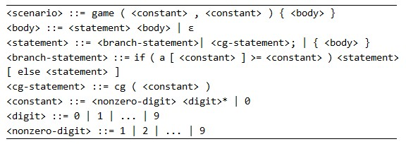

ZCC is playing a RPG game named “kenji’s life VI”.
In this game, as an advanturer, ZCC has N kinds of energy, labeled 1 to N. Before set off for an adventure, ZCC can charge some of his energy, which allow he to set the amount of every kind of energy (a_i) a non-negative integer arbitrarily. Different kind of energy is set independently.
When different energy mix, they become unstable. If there exist two integers u and v (u≤v), where a_u, a_u+1, ..., a_v are all positive number, and sum of those v-u+1 number exceed K, a horrific explosion occurs, and of course, Game Over.
During the adventure, the story may develop differently depending on the amount of a certain kind of energy. Sometimes there will be some CGs, but some of CGs may only appear in some certain sub-story.
ZCC has played this game many times, but failed to collect some of the CGs. Now he wonders, How many kinds of CGs is collectable?
The Scenario is given in the form of C++ like code.

As an explanation:
The Scenario is presented as a non-type function game(n, k).
game(n, k) has 2 arguments, n and k, which are actually 2 constants. n is the number of energy type available, k is the limitation of sum of consecutive positive number. There may be 3 types of statement:
1.cg(p1), means a CG numbered p1 appears here.
2.if (a[p1] >= p2) <statement> [else <statement>], is just like the branch statement in other programming languages. else is matched with the nearest if, just like the way C++ works.
3.{ <statements>* }, a block contains zero, one or several statements.
Note that though the scenario is guaranteed to satisfy the grammar above, the code-style(space, bracket, line break) may not strictly obeys the explanation above.